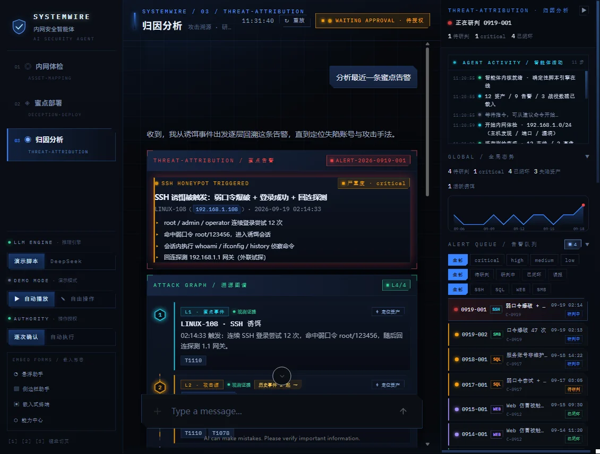
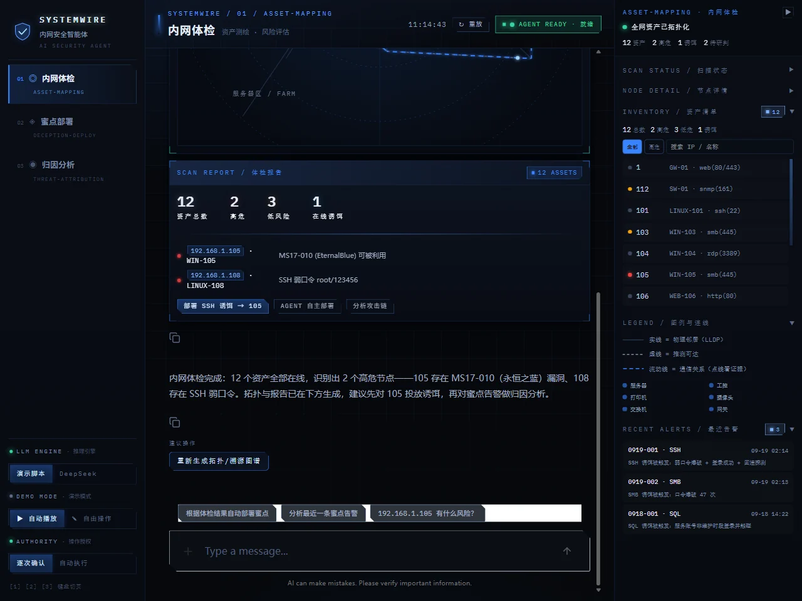
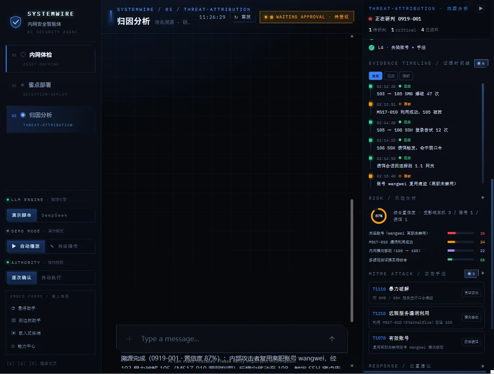
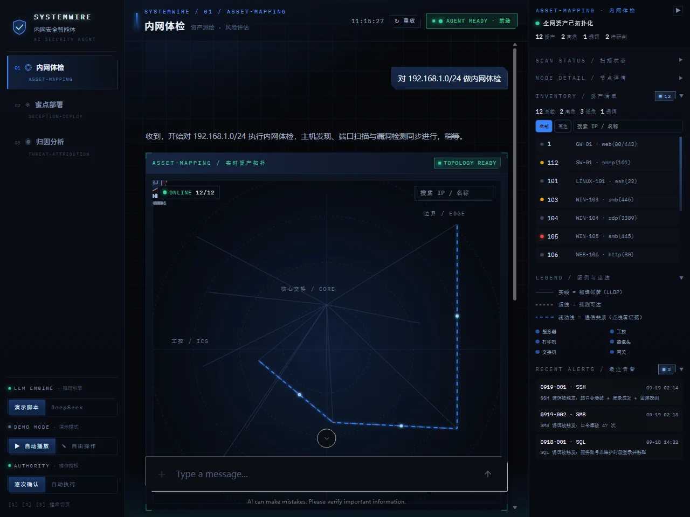

SYSTEMWIRE · 三栏 SOC 控制台（真实运行截图）查看 5 张截图



CASE 01 · 招牌项目
SYSTEMWIRE 内网安全智能体平台Conversational AI Security Agent · Human-in-the-loop
对话式 Agent 不能只停留在"能聊天"。我做了一个对话驱动的三栏 SOC 控制台，把内网体检、蜜点部署、威胁归因做成可审计、可离线复现的人机协同流程。
- 确定性演示引擎：拦截 OpenAI 兼容接口，用状态机 + SSE 流式编排脚本，断网 100% 可复现；真实 DeepSeek 失败自动回退，演示永不中断。
- 高风险动作必须授权：部署/卸载蜜点走 HITL 授权卡（终端命令、利弊、影响评估、端口冲突四方案），Agent 不能自行执行。
- MITRE 杀伤链研判：蜜点告警逐层回溯 L1–L4，给出 ATT&CK 技术编号、四因子置信度与证据时间线，AI 只说结论、明细交给 Artifact。
3 运营场景12 资产 / 9 告警
50 Vitest 用例10 条路由tsc 类型门